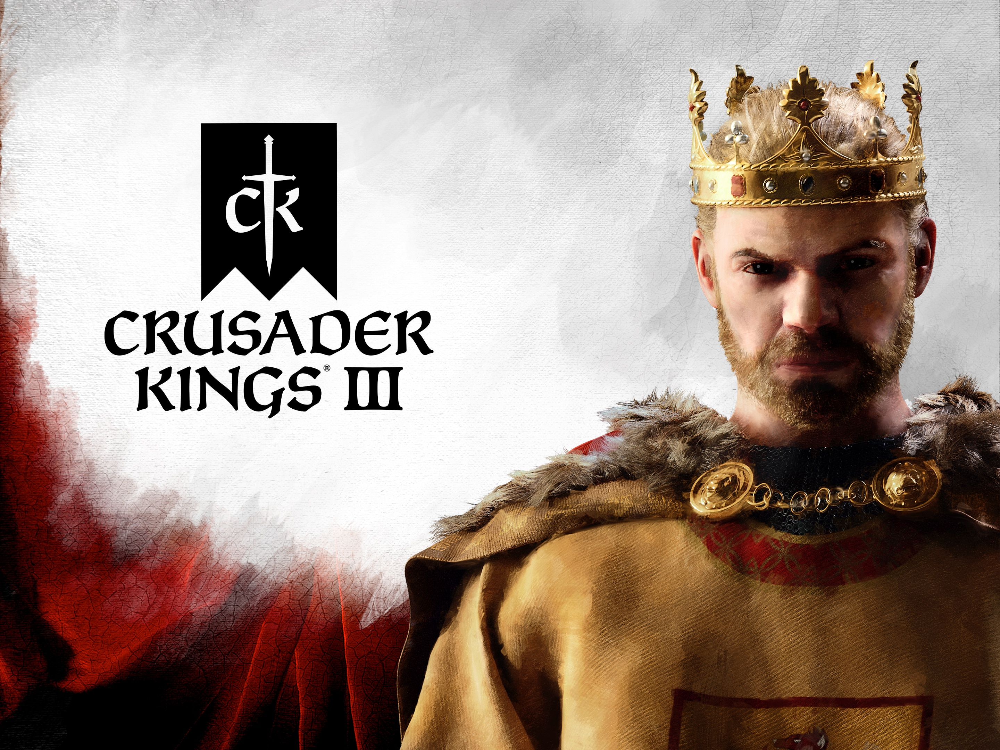
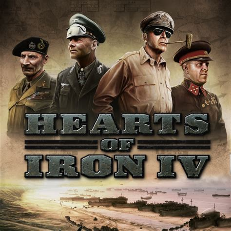

Stellaris
A space sim |
There is a wide variety of possible gameplay such as trading, conquering, researching, vassalizing, among others. The generation of space nations and galaxies and the different technological paths add much more replayability to each style compared to CK3 and HOI4.
Crusader Kings 3
|  | A medieval sim |
Lots of customizability for how you want to drive the cultural, religious, and dynastic development of your kingdom. But sometimes, gameplay can feel rather slow for me with technological development taking decades and wars being highly limited.
Hearts of Iron 4
|  | A WW2 sim |
The focus tree is a primary driver for engaging gameplay, giving bonuses for following defined historical or ahistorical paths. Much of my enjoyment came from engaging with the base mechanics while following specific paths, but the base mechanics themselves feel rather dull when playing countries without a focus tree.